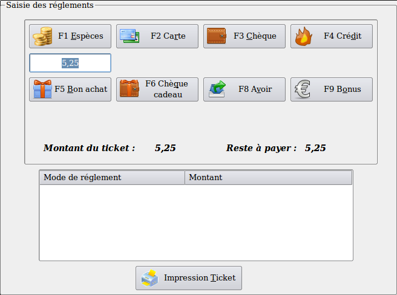
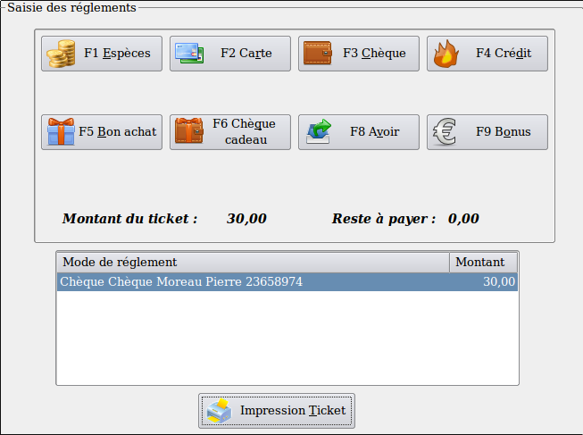

~ Laurux.Pos ~

~ Laurux.Pos ~ |
|
|
|
Gestion des réglements.
A l'issue de la saisie des produits, tout ticket de caisse se termine par un règlement.
Laurux
gère différents types de règlements : Espèces, carte, chèque, crédit,
bon achat, chèque cadeau, avoir ou, si carte de fidélité, bonus.

Hormis les espèces tous les règlements ont besoin
d'une donnée supplémentaire tel que le nom du client. Les avoirs eux,
ont une gestion un peu à part détaillée dans le chapitre Gestion des avoirs
Dans cet exemple on a un ticket de 5,25 euros et le client nous donne 6 euros en espèces. On va donc faire F1 pour saisir le règlement espèces puis on va saisir 6 comme montant perçu.
Le ticket détaillera le montant perçu et le montant à rendre.
2- Les règlements par carte, chèque, crédit, bon achat et chèque cadeau.
La saisie de ces modes de règlement va ouvrir une fenêtre de saisie
d'une donnée supplèmentaire comme le nom du client par exemple, ou le
nom et le numéro du chèque etc...
Après validation du règlement on aura donc

3- Les règlements bonus.
Se reporter à la gestion des cartes de fidélité.
4- Les règlements multiples.
Il est bien entendu possible de faire des règlements multiples comme
cela a été détaillé dans le chapitre Saisie d'un ticket simple avec règlements multiples
5- Validation du ticket.
Le règlement étant saisi et le solde du ticket étant à zéro, on pourra imprimer le ticket en cliquant sur le bouton "Impression Ticket".
Si dans les préférences, on a activé l'option "Choix Impression Ticket" alors on aura un bouton supplémentaire "Sortir sans imprimer" qui nous permettra de valider le réglement et le ticket sans effectuer de sortie vers l'imprimante.
----------------------------------------------------------------------------------------------------------------------